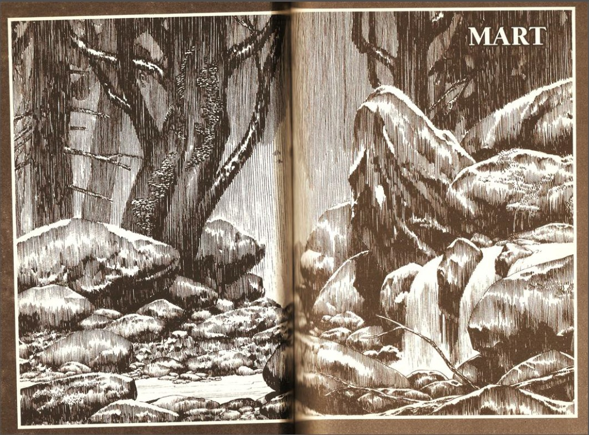
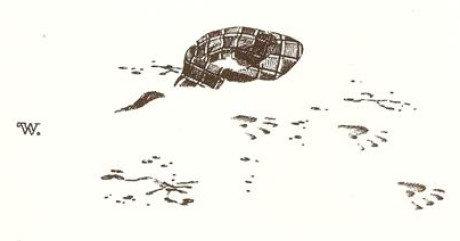
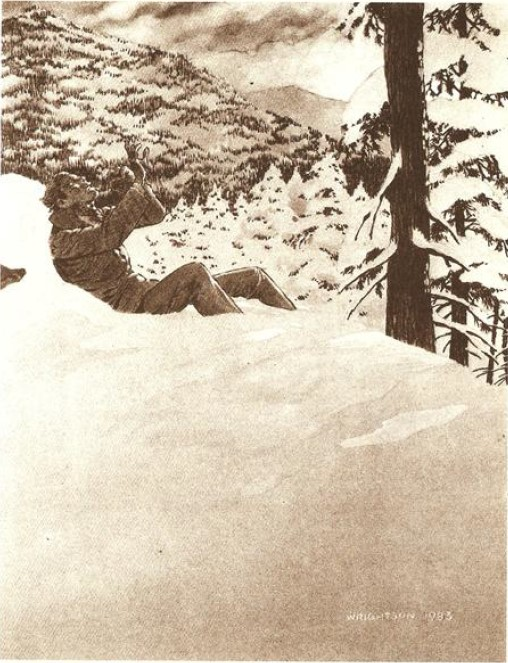

YILIN SON GERÇEK tipisi - alacakaranlık inip gece yaklaşırken ağır ve ıslak kar, sulu sepkene dönüşüyordu -Tarker's Mills'in her yerine, çürümüş ağaçların şiddetli silah atışlarını andıran çatırtılarıyla beraber, sürüklenen dallar getirmişti. Kasabanın kütüphane görevlisi Milt Strumfuller, kahve içerken, Tabiat Ana, cansız ağaçlarını buduyor, diye karısıyla konuşuyordu. O, hoş ve sessiz karısını on iki yıl boyunca dehşete tutsak etmiş, dar kafalı, soluk mavi gözlü zayıf bir adamdı. Böylesi bir gerçekten şüphelenen sadece birkaç kişi vardı - Polis memuru Neary'nin karısı Joan onlardan biriydi - ama kasabalar esrarlı yerler olabilirdi ve kasaba sakinlerinden başka hiç kimse orada neler olup bittiğine emin olamazdı. Kasaba sırlarını saklar.
Bu deyim Milt'in o kadar hoşuna gitmişti ki yeniden söyleyecekti: Evet, Tabiat Ana cansız ağaçlarını buduyor ... aniden ışıklar gitti ve soluğu kesilen Donna Lee Sturmfuller küçük bir çığlık attı. Kahvesini de dökmüştü.
Temizle şunu, dedi kocası soğuk bir tavırla. Kalk şunu temizle ... hemen.
Peki, tatlım. Tamam.
Karanlıkta, dökülen kahveyi temizlemek için beceriksizce havlu ararken baldırını tabureye çarpıyor. Acıyla haykırıyor. Karanlıkta, kocası keyifle gülüyor. Karısının acısını, The Reader's Digest'daki şakalar dışında, her şeyden daha çok eğlendirici bulurdu. Bu şakalar - Üniformalı Mizah, Birleşik Devletlerdeki Yaşam - onu gerçekten çok güldürürdü.
Bu vahşi Mart gecesinde, Tabiat Ana cansız ağaçların yanı sıra Tarker Çayı'nın yanındaki birkaç güç hattını da budamıştı. Birbirlerinden ayrılıp, bir yılan yuvası gibi görünen yolun üzerine düşen ve tembelce dönüp mavi alevler tüküren güç hatları, gittikçe yoğunlaşan sulusepken kar tarafından örtülecekti.
Tüm Tarker's Mills karanlığa boğulmuştu.
Fırtına tatmin olmuşçasına sakinleşirken gece yarısının az öncesinde sıcaklık otuz üç fahrenhayttan on altı fahrenhayta düşüvermişti.1 Erimeye yüz tutan kar yığınları bir anda tuhaf heykelcikler halinde donmaya başlamıştı. Yaşlı Hague'nin tarlası - o yörede Kırk Akrelik2 Tarla diye bilinirdi - çatlamış bir cam görünümüne bürünmüştü. Evler hâlâ karanlıktı; tıkırdayan gaz ocakları soğuktu. Paten sahasına dönmüş yollara henüz hiçbir hat işçisi ulaşamamıştı.
(1.- Buradaki derecenin Alman fizikçisi Daniel Fahrenheit tarafından geliştirilen sıcaklık ölçeğine göre verildiğini söylemem gerekiyor. Yani suyun donma noktasını 32°, kaynama noktasını ise 212° olarak kabul eden ve bu iki sıcaklığın arasını 180 eşit aralığa bölen sıcaklık ölçeğine göre. Celcius (°C) ölçeğindeki bir sıcaklığı Fahrenhayt ölçeğine çevirmek için °F = (9/5 x "C) + 32 bağıntısından yararlanılır. Bu bağıntıdan yararlanarak Stephen'in belirttiği sıcaklığı çok daha net bir şekilde anlayabilirsiniz. Tüm bunların üniversiteye TM dalında hazırlanmamla hiçbir ilgisi olmadığını belirtmek isterim, çn.)
(2.- Akre: Bir arazi ölçü birimi. Bir Akre 0,404 dönüme eşittir.)
Bulutlar tamamen dağıldı. Bir dolunay görüntüsü geride kalan bulut parçalarının arasından görünüp kayboluyordu. Ana Cadde'yi kaplayan buz, ölü kemikler gibi ışıldıyordu.
Gecenin içinde bir şey ulumaya başladı.
Daha sonra hiç kimse bu sesin nereden geldiğini söyleyemeyecekti; dolunay kasabanın kararmış evlerini boyarken ses her yerdeydi ve hiçbir yerdeydi, Mart rüzgârı borusunu üfleyen ölü bir Berserk3 gibi yükselip inlemeye başlarken ses her yerde ve hiçbir yerdeydi, rüzgârla sürükleniyordu, yapayalnız ve vahşice.
(3.- Berserk: Eski İzlanda dilinde Beserkr (ayı postu), Ortaçağ öncesinde ve Ortaçağ'da Viking ve Germen tarihi ile folklorunda azılı savaşçı. Berserk'ler en yüce Viking tanrısı Odin'e taparlar, kralın ya da soyluların maiyetinde muhafız ya da saldın kıtası olarak hizmet görürlerdi. Berserklerin savaş alanındaki yırtıcılığı ve hayvan postundan yapılma süslü giysileri, Avrupa'da kurtadam efsanelerinin gelişmesinde önemli rol oynamıştır. Berserkler barındıkları toplumda topluluklarda diledikleri zaman ırza geçer ve adam öldürürlerdi, çn.)
Donna Lee, sesi, yanında nezaketten uzak kocası vicdan rahatlığı içinde, deliksiz bir uykuda uyurken duymuştu; polis memuru Neary, sesi, Laural Caddesi'ndeki dairesinin içinde paçalı donuyla dikilirken duymuştu; şişman ve beceriksiz ilkokul müdürü Ollie Parker, sesi, yatak odasında duymuştu; diğerleri de duymuştu elbette. Sesi duyanlardan biri de tekerlekli sandalyede oturan bir erkek çocuğuydu.
Hiç kimse onu görmedi. Ve hiç kimse, ertesi sabah Tarker's Çayı'na, kopmuş kabloları onarmaya giden hat işçisinin bulduğu serserinin adını bilmedi. Serseri buzla kaplanmıştı, sessiz bir çığlık içindeki kafası arkaya doğru kıvrılmıştı, yıpranmış eski paltosu ve onun altındaki gömleği ısırılarak parçalanmıştı. Kendi kanından oluşan donmuş bir havuzun içinde oturan serseri, gözünü kopmuş hatlara dikmiş bakıyordu ve araları buz tutmuş parmaklarıyla kendisini korumaya çalışır gibi görünen elleri hâlâ havadaydı.
Ve etrafındaki karın üzerinde pençe izleri vardı.
Kurt izleri.

